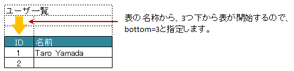

-
@Target(value={METHOD,FIELD}) @Retention(value=RUNTIME) @Documented public @interface XlsHorizontalRecords
水平方向に連続する行をCollection(List, Set)または配列にマッピングする際に指定します。基本的な使い方
表名を、属性
tableLabel()で指定します。レコード用クラスは、列の定義をアノテーション
XlsColumnで指定します。// シート用クラス @XlsSheet(name="Users") public class SampleSheet { @XlsHorizontalRecords(tableLabel="ユーザ一覧") private List<UserRecord> records; } // レコード用クラス public class UserRecord { @XlsColumn(columnName="ID") private int id; @XlsColumn(columnName="名前") private String name; }
基本的な使い方
表の開始位置を指定する場合（表の名称がない場合）
表の名称がない場合、表の開始位置をインデックスやアドレスで指定します。
- 属性
headerColumn()、headerRow()で、インデックスで指定します。 headerAddress()で、B3のようにシートのアドレス形式で指定します。
@XlsSheet(name="Users") public class SampleSheet { // インデックス形式で表の開始位置を指定する(値は0から始まります) @XlsHorizontalRecords(headerColumn=0, headerRow=1) private List<UserRecord> records1; // アドレス形式で表の開始位置を指定する場合 @XlsHorizontalRecords(headerAddress="A2") private List<UserRecord> records2; }表の名称から開始位置が離れた場所にある場合
表の名称が定義してあるセルの直後に表がなく離れている場合、属性
bottom()で表の開始位置がどれだけ離れているか指定します。@XlsSheet(name="Users") public class SampleSheet { @XlsHorizontalRecords(tableLabel="ユーザ一覧", bottom=3) private List<UserRecord> records; }表の名称から離れている際の開始位置の指定
表の見出しが縦に結合されデータレコードの開始位置が離れた場所にある場合
表の見出しセルが縦に結合され、データレコードの開始位置が離れている場合、属性
headerBottom()でデータレコードの開始位置がどれだけ離れているか指定します。下記の例の場合、見出しの「テスト結果」は横に結合されているため
XlsColumn.headerMerged()と組み合わせて利用します。// シート用クラス @XlsSheet(name="Users") public class SampleSheet { // 見出しが縦に結合され、データのレコードの開始位置が離れている場合 @XlsHorizontalRecords(tableLabel="クラス情報", headerBottom=2) private List<SampleRecord> records; } } // レコード用クラス public class SampleRecord { @XlsColumn(columnName="No.") private int no; @XlsColumn(columnName="名前") private String name; // セル「算数」のマッピング @XlsColumn(columnName="テスト結果") private int sansu; // セル「国語」のマッピング // 結合されている見出しから離れている数を指定する @XlsColumn(columnName="テスト結果", headerMerged=1) private int kokugo; / セル「合計」のマッピング // 結合されている見出しから離れている数を指定する @XlsColumn(columnName="テスト結果", headerMerged=2) private int sum; }
表の見出しからデータレコードが離れているときの指定
表の終端を指定する場合（属性
デフォルトでは行に1つもデータが存在しない場合、その表の終端となります。 行の一番左側の列の罫線によって表の終端を検出する方法もあります。 この場合は 属性terminal()）terminal()にRecordTerminal.Borderを指定してください。@XlsSheet(name="Users") public class SampleSheet { @XlsHorizontalRecords(tableLabel="ユーザ一覧"), terminal=RecordTerminal.Border) private List<UserRecord> records; }
表の終端の指定
空のレコードを読み飛ばす条件を指定する場合
空のレコードが存在すると無駄なレコードをとなり、読み込んだ後に除外する処理をわざわざ行う必要があります。
そのような場合、属性ignoreEmptyRecord()を'true'に設定することで、予め空のレコードを読み飛ばしておく方法もあります。レコード用クラスには、空を判定するメソッドを用意し、アノテーション
XlsIsEmptyを付与します。
publicかつ引数なしの戻り値がboolean形式の書式にする必要があります。ただし、書き込み時にはこの設定は無効で、空のレコードも出力されます。
アノテーション// シート用クラス @XlsSheet(name="Users") public class SampleSheet { // レコードの読み飛ばしを有効にします。 @XlsHorizontalRecords(tableLabel="ユーザ一覧"), terminal=RecordTerminal.Border, ignoreEmptyRecord=true) private List<UserRecord> records; } // レコード用クラス public class UserRecord { @XlsColumn(columnName="ID") private int id; @XlsColumn(columnName="名前") private String name; @XlsColumn(columnName="住所") private String address; // レコードが空と判定するためのメソッド // 列「ID」は空の判定には含まない。 @XlsIsEmpty public boolean isEmpty() { if(name != null || !name.isEmpty()) { return false; } if(address != null || !address.isEmpty()) { return false; } } }XlsIsEmptyを付与したメソッドの実装において、IsEmptyBuilderを使用すると、 より簡潔に記述することができます。// レコード用クラス public class UserRecord { @XlsColumn(columnName="ID") private int id; @XlsColumn(columnName="名前") private String name; @XlsColumn(columnName="住所") private String address; // レコードが空と判定するためのメソッド @XlsIsEmpty public boolean isEmpty() { // 列「ID」は空の判定には含まないよう除外する。 return IsEmptyBuilder.reflectionIsEmpty(this, "id"); } }表の終端セルを指定する場合（属性
表が他の表と連続しており属性terminateLabel()）terminal()でRecordTerminal.Border、RecordTerminal.Emptyのいずれを指定しても終端を検出できない場合があります。 このような場合は属性terminateLabel()で終端を示すセルの文字列を指定します。// シート用クラス @XlsSheet(name="Users") public class SampleSheet { // レコードの読み飛ばしを有効にします。 @XlsHorizontalRecords(tableLabel="クラス情報", terminal=RecordTerminal.Border, terminateLabel="平均") private List<UserRecord> records; }
表の終端セルの指定
表の見出しの走査の終了条件の指定
属性
headerLimit()を指定すると、テーブルの見出し用の列が指定数見つかったタイミングでExcelシートの走査を終了します。表が隣接しており、無駄な列のセルを読み込みを行わない場合などに使用します。
// シート用クラス @XlsSheet(name="Users") public class SampleSheet { // レコードの読み飛ばしを有効にします。 @XlsHorizontalRecords(tableLabel="クラス情報", terminal=RecordTerminal.Border, headerLimit=3) private List<UserRecord> records; }
表の見出しの走査の終了条件の指定
表の見出しに空白がある場合
表の走査は、まず指定したタイトルなどの表の開始位置を元に、見出し用セルを取得し、その後、データのレコードを取得します。
見出し用セルを取得する際には、右方向に向かって検索をしますが、 通常は空白セルが見つかった時点で走査を終了します。空白セルの次にも見出し用セルがあるような場合、属性
range()を指定することで、指定した値分の空白セルを許容し、 さらに先のセルの検索を試みます。また、属性
headerAddress()やtableLabel()で指定した位置から表が開始しないような場合も、 属性range()を指定することで、さらに先のセルの検索を試みます。@XlsSheet(name="Users") public class SampleSheet { // レコードの読み飛ばしを有効にします。 @XlsHorizontalRecords(tableLabel="クラス情報", terminal=RecordTerminal.Border, range=3) private List<UserRecord> records; }
表の見出しに空白がある場合
書き込み時にレコードが不足、余分である場合の操作の指定
属性
overRecord()で、書き込み時にデータのレコード数に対してシートのレコードが足りない場合の操作を指定します。
値は、OverRecordOperateで指定し、行の挿入や、上部のセルをコピーするなど指定ができます。
デフォルトでは何もしません。属性
remainedRecord()で、書き込み時にデータのレコード数に対してシートのレコードが余っている際の操作を指定します。
値は、RemainedRecordOperateで指定し、行の値のクリアや、行の削除を指定することができます。
デフォルトでは何もしません。// シート用クラス @XlsSheet(name="Users") public class SampleSheet { // レコードの読み飛ばしを有効にします。 @XlsHorizontalRecords(tableLabel="ユーザ一覧", overRecord=OverRecordOperate.Insert, remainedRecord=RemainedRecordOperate.Clear) private List<UserRecord> records; }表の書き込み時の不足・余分なレコードの操作の指定
表の名称を正規表現、正規化して指定する場合
シートの構造は同じだが、ラベルのセルが微妙に異なる場合、ラベルセルを正規表現による指定が可能です。
また、空白や改行を除去してラベルセルを比較するように設定することも可能です。正規表現で指定する場合、アノテーションの属性の値を
/正規表現/のように、スラッシュで囲みます。- スラッシュで囲まない場合、通常の文字列として処理されます。
- 正規表現の指定機能を有効にするには、システム設定のプロパティ
XlsMapperConfig.setRegexLabelText(boolean)の値を trueに設定します。
ラベセルの値に改行が空白が入っている場合、それらを除去し正規化してアノテーションの属性値と比較することが可能です。
- 正規化とは、空白、改行、タブを除去することを指します。
- ラベルを正規化する機能を有効にするには、、システム設定のプロパティ
XlsMapperConfig.setNormalizeLabelText(boolean)の値を trueに設定します。
これらの指定が可能な属性は、
tableLabel()、terminateLabel()です。// システム設定 XlsMapper xlsMapper = new XlsMapper(); xlsMapper.getConfig() .setRegexLabelText(true) // ラベルを正規表現で指定可能にする機能を有効にする。 .setNormalizeLabelText(true); // ラベルを正規化して比較する機能を有効にする。 // シート用クラス @XlsSheet(name="Users") public class SampleSheet { // 正規表現による指定 @XlsHorizontalRecords(tableLabel="/ユーザ一覧.+/") private List<UserRecord> records; }- バージョン:
- 1.1
- 作成者:
- Naoki Takezoe, T.TSUCHIE
- 属性
-
-
任意要素のサマリー
任意要素 修飾子とタイプ 任意要素と説明 intbottomtableLabel()で指定した表のタイトルから、実際の表の開始位置がどれだけ離れているか指定します。StringheaderAddress表の開始位置のセルのアドレスを'A1'などのように指定します。intheaderBottom見出し用セルから、データ行の開始位置がどれだけ離れているかを指定します。intheaderColumn表の開始位置（見出し列）セルの行番号を指定します。intheaderLimit表の見出しとなるセルのカラムが指定数見つかったタイミングで Excelシートの走査を終了したい場合に指定します。intheaderRow表の開始位置（見出し行）セルの行番号を指定します。booleanignoreEmptyRecord空のレコードの場合、処理を無視するかどうか。booleanoptionalレコードが見つからない場合に、エラーとしないで、無視して処理を続行するかどうかを指定します。OverRecordOperateoverRecord書き込み時にデータのレコード数に対してシートのレコードが足りない場合の操作を指定します。intrange見出し用セルを走査するときの許容する空白セルの個数を指定します。Class<?>recordClassレコードのマッピング先のクラスを指定します。RemainedRecordOperateremainedRecord書き込み時にデータのレコード数に対してシートのレコードが余っている際の操作を指定します。StringtableLabel表の見出し（タイトル）ラベルを指定します。RecordTerminalterminal表の終端の種類を指定します。StringterminateLabel表の終端を示すセルの文字列を指定します。
-
-
-
要素の詳細
-
optional
public abstract boolean optional
レコードが見つからない場合に、エラーとしないで、無視して処理を続行するかどうかを指定します。- 戻り値:
- trueの場合、無視しして処理を続行します。
- デフォルト:
- false
-
tableLabel
public abstract String tableLabel
表の見出し（タイトル）ラベルを指定します。 値を指定した場合、ラベルと一致するセルを起点に走査を行います。属性
headerRow(),headerColumn()headerAddress()のどちらか一方を指定可能です。システム設定により、正規表現による指定や正規化（改行、空白、タブの削除）による比較の対象となります。
- 戻り値:
- デフォルト:
- ""
-
terminateLabel
public abstract String terminateLabel
表の終端を示すセルの文字列を指定します。テーブルが他のテーブルと連続しており、属性
terminal()でBorder、Emptyのいずれを指定しても終端を検出できない場合に指定しますシステム設定により、正規表現による指定や正規化（改行、空白、タブの削除）による比較の対象となります。
- 戻り値:
- デフォルト:
- ""
-
headerRow
public abstract int headerRow
表の開始位置（見出し行）セルの行番号を指定します。headerColumn()属性とセットで指定します。値は'0'から始まる。
- 戻り値:
- 値は0から始まり、指定しない場合は-1を指定します。
- デフォルト:
- -1
-
headerColumn
public abstract int headerColumn
表の開始位置（見出し列）セルの行番号を指定します。headerRow()属性とセットで指定します。- 戻り値:
- 値は0から始まり、指定しない場合は-1を指定します。
- デフォルト:
- -1
-
headerAddress
public abstract String headerAddress
表の開始位置のセルのアドレスを'A1'などのように指定します。値を指定した場合、指定したアドレスを起点に走査を行います属性
headerRow(),headerColumn()のどちらか一方を指定可能です- 戻り値:
- デフォルト:
- ""
-
recordClass
public abstract Class<?> recordClass
レコードのマッピング先のクラスを指定します。指定しない場合は、Genericsの定義タイプが自動的に採用されます。
- デフォルト:
- java.lang.Object.class
-
terminal
public abstract RecordTerminal terminal
表の終端の種類を指定します。- 戻り値:
RecordTerminal.Emptyの場合、空のレコードがあると処理を終了します。
- デフォルト:
- com.gh.mygreen.xlsmapper.annotation.RecordTerminal.Empty
-
range
public abstract int range
見出し用セルを走査するときの許容する空白セルの個数を指定します。見出しセルを走査する際には、右方向に向かって検索をしますが、通常は空白セルが見つかった時点で走査を終了します。
空白セルの次にも見出し用セルがあるような場合、属性range()を指定することで、 指定した値分の空白セルを許容し、さらに先のセルの検索を試みます。また、属性
headerAddress()やtableLabel()で指定した位置から表が開始しないような場合も、 属性range()を指定することで、さらに先のセルの検索を試みます。- 戻り値:
- 値は1から始まります。初期値は1です。
- デフォルト:
- 1
-
bottom
public abstract int bottom
tableLabel()で指定した表のタイトルから、実際の表の開始位置がどれだけ離れているか指定します。下方向の行数を指定する。
- 戻り値:
- 値は1から始まり、指定しない場合は1を指定します。
- デフォルト:
- 1
-
headerLimit
public abstract int headerLimit
表の見出しとなるセルのカラムが指定数見つかったタイミングで Excelシートの走査を終了したい場合に指定します。主に無駄な走査を抑制したい場合にします。
テーブルが隣接しており終端を検出できない場合などに、 見出し用セルのカラム数を明示的に指定してテーブルの区切りを指定する場合に使用できます。
- 戻り値:
- 値は0から始まり、指定しない場合は0を指定します。
- デフォルト:
- 0
-
headerBottom
public abstract int headerBottom
見出し用セルから、データ行の開始位置がどれだけ離れているかを指定します。下方向の行数を指定します。
見出しが縦に結合されているような場合に指定します。
- 戻り値:
- 値は1から始まり、指定しない場合は1を指定します。
- 導入されたバージョン:
- 1.1
- デフォルト:
- 1
-
overRecord
public abstract OverRecordOperate overRecord
書き込み時にデータのレコード数に対してシートのレコードが足りない場合の操作を指定します。- 戻り値:
OverRecordOperate.Breakの場合、足りないレコードがあるとそこで処理を終了します。
- デフォルト:
- com.gh.mygreen.xlsmapper.annotation.OverRecordOperate.Break
-
remainedRecord
public abstract RemainedRecordOperate remainedRecord
書き込み時にデータのレコード数に対してシートのレコードが余っている際の操作を指定します。- 戻り値:
RemainedRecordOperate.Noneの場合、余っているレコードがあっても何もしません。
- デフォルト:
- com.gh.mygreen.xlsmapper.annotation.RemainedRecordOperate.None
-
ignoreEmptyRecord
public abstract boolean ignoreEmptyRecord
空のレコードの場合、処理を無視するかどうか。レコードの判定用のメソッドに、アノテーション
XlsIsEmptyを付与する必要があります。- 戻り値:
- trueの場合、空のレコードを無視します。
- 導入されたバージョン:
- 0.2
- デフォルト:
- false
-
-